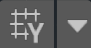
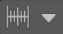
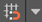
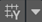

Unity provides a visual grid in the Editor’s Scene view window, which can help precisely align GameObjects by snapping (moving) them to the nearest grid location.
可以通过几种方式沿 X、Y 或 Z 轴将游戏对象与网格对齐：
还能以增量方式变换游戏对象，而无需将其与网格线对齐。如果需要更改移动、旋转或缩放的量，则可以更改递增的对齐值。
默认情况下，网格是隐藏的，但是可以使其可见并可切换沿着哪个轴显示。可以通过更改以下设置来自定义网格的外观和行为：
其中很多操作都支持键盘快捷键。可以查看为这些操作分配了哪些组合键，并使用 Shortcuts Manager 对其进行自定义。
| Icon | Actions |
|---|---|
|  Grid visibility |
Toggle grid on or off Change grid axis Change grid opacity Move grid to gizmo handle or back to origin |
| Grid snapping |
Toggle grid snapping on or off Change grid size Align a GameObject to an axis |
|  Snap increment | Change the default increment snap values |
Note: The settings on the Grid and Snap Overlay are global to all Scene views.
本节提供有关如何执行以下操作的信息：
可以将游戏对象对齐到单个轴上的最近网格点，也可以一次性在所有轴上对齐游戏对象。
要将游戏对象与特定轴的网格上的最近点对齐，请执行以下操作：
In the Grid and Snap Overlays toolbar, open the grid snapping drop-down menu ().
In the Align Selected section, click the X, Y, or Z button that matches the axis you want to push to.
要一次性在所有轴上对齐游戏对象，请执行以下操作：
1.选择要与网格对齐的游戏对象。
2.使用 Ctrl+\ (Windows) 或 Command+\ (macOS) 快捷键将游戏对象推动到所有轴上的网格上。
Alternatively, from the **Grid and Snap** Overlays toolbar, open the grid visibility drop-down menu () and in the **Align Selected** section, click **All Axes**.
要开启自动贴靠网格，请执行以下操作：
启用自动网格贴靠时，__Move、Rotate__ 和 Scale 变换工具会沿激活的辅助图标轴将选定的游戏对象贴靠到网格。如果需要游戏对象以较小的增量移动，也可以采用增量方式变换游戏对象。
要按增量贴靠值来移动、旋转或缩放，请执行以下操作：
要更改默认的增量贴靠值，请执行以下操作：
2.Increment Snap 部分包含几个属性，可用于为所有轴设置相同的值或不同的值：

**Move**: With the link icon selected, enter a uniform increment snap value for all axes, or unlink the axes and set different increment snap values in the __X__, __Y__, and __Z__ axis properties.
**Rotate**: Enter a rotation increment value in degrees.
**Scale**: Enter a scale increment value as a scale factor. For example, if the Scale value is 2, the selected GameObject will scale at an increment of twice its original size.
本节提供有关自定义以下设置的信息：
Toggle grid visibility by clicking the grid visibility icon () on the Grid and Snap Overlay toolbar to display or hide the grid on any axis (X, Y, Z). If you are in orthographic mode (Iso), Unity chooses the view.
要更改显示网格的轴，请执行以下操作：
From the Grid and Snap Overlays toolbar, open the grid visibility drop-down menu ().
From the Grid Plane section, select the axis you want to appear.
You can set the size of the gridlines as they appear in the Scene view window. This affects the appearance of the grid and how your GameObjects automatically snap to the grid, but doesn’t affect how much your GameObject(s) move, rotate, or scale in increments.
如果一次性为所有轴设置一个大小，则会显示一个均匀（正方形）网格。但是，也可以在三个轴的任何一个轴上使用不同的值，从而查看非均匀（矩形）网格。默认情况下，网格设置为均匀距离（所有轴上为 1）。
要调整网格的大小，请执行以下操作：
From the Grid and Snap Overlays toolbar, open the snap increment drop-down menu ().
Use the Size property with the link icon selected to enter a uniform value for the visual grid (all grid lines the same length), or unlink the axes and specify a non-uniform distance between the grid lines for the X, Y, and Z.
例如，要在 x 和 y 轴上创建矩形网格，可取消轴的链接并将 X 和 Y 设置为 1，将 Z 设置为 2。
4.如果要切换回网格线之间的均匀值，请执行以下操作：
* 选择链接图标。
* __Size__ 属性现在通过 __X__ 中输入的值显示所有轴的值。
注意：还可以使用键盘快捷键来增大和减小网格的大小：
To change the color of the visible grid lines in the Scene view window:
1.打开 Unity 的 Preferences 页面（在 Windows 上选择 Edit > Preferences 或在 macOS 上选择 Unity > Preferences）。 2.从列表中单击 Colors 类别以查看 Colors 页面。

1.使用 Grid 属性的拾色器选择一种新颜色。
如果网格线太浅或太深，可以进行调整：
From the Grid and Snap Overlays toolbar, open the grid visibility drop-down menu ().
Adjust the Opacity using the slider.
可以使用以下快捷键沿网格的轴前后移动网格：
微移网格可以使其更近（例如，如果很难从远处的网格中看到游戏对象）或将其移到更远处。
From the grid visibility drop-down menu () in the Grid and Snap Overlay toolbar, use the Move To section to move the grid to the handle of the selected GameObject (Handle) or back to the default position (Origin).
要将网格轴和不透明度设置重置为其默认值，请执行以下操作：
From the Grid and Snap Overlays toolbar, open the grid visibility drop-down menu ().
Click the More menu (⋮) and then click Reset.
要将网格的大小重置为默认值，请执行以下操作：
From the Grid and Snap Overlays toolbar, open the grid snapping drop-down menu ().
Click the More menu (⋮) and then click Reset.
要将增量贴靠值重置为默认值，请执行以下操作：
From the Grid and Snap Overlays toolbar, open the snap increment drop-down menu ().
Click the More menu (⋮) and then click Reset.
只有 Increment Snap 部分下的值会恢复为其原始默认值。
可以使用默认 Unity 快捷键执行以下操作：
| 操作 | 默认快捷键 |
|---|---|
| 增大网格大小 |
Ctrl+] (Windows) 或 Command+] (macOS) |
| 减小网格大小 |
Ctrl+[ (Windows) 或 Command+[ (macOS) |
| 向后微移网格 | Shift+[ |
| 向前微移网格 | Shift+] |
| 推动到网格（将所选对象与网格对齐） |
Ctrl+\ (Windows) 或 Command+\ (macOS) |
| 重置网格 | （默认情况下没有快捷键） |
要更改这些默认快捷键，请使用 Shortcuts Manager。